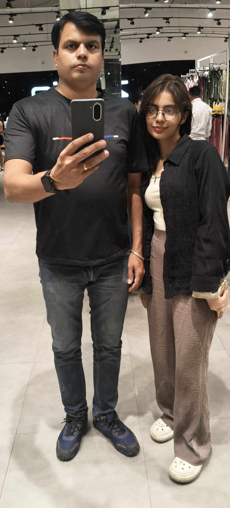
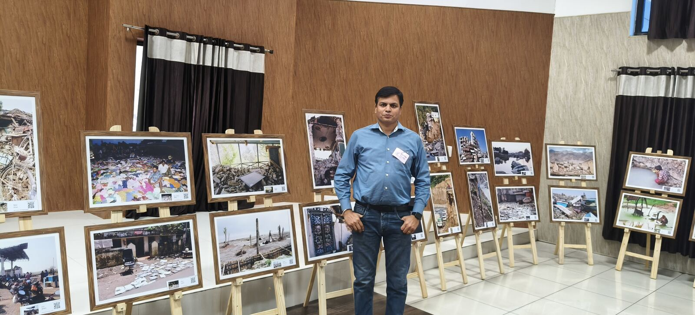
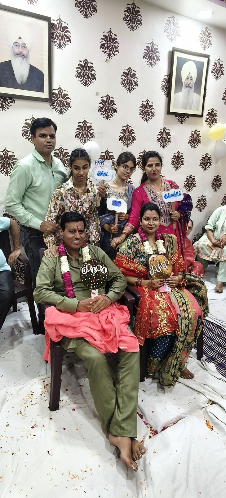

Assistant Officer
F.C. Sondhi & Co. / FCSSport. Documents, finance, Excel, payments, grants, scholarships and reports.
Python, APIs, AI tools, automation, web experiments and photography — things I build, explore and find interesting.

Assistant Officer at F.C. Sondhi & Co. / FCSSport, based in Jalandhar, Punjab. I love my work, and technology is where much of my curiosity lives.
My everyday work covers documents, finance, Excel, payments, grants, scholarships and reports - the kind of work where one wrong cell at 5pm ruins an evening. I love my work, and I like making it smoother: AI tools like ChatGPT, Claude and Gemini handle the practical tasks, and I keep looking for ways to use technology to make work more fun and easier.
Outside office hours I build software with Python, Linux and APIs, and experiment with language models and embeddings through free AI APIs like NVIDIA's. Beyond the screen: a good web series or movie, photography, family time, chai and music - usually something Punjabi playing in the background.
A mix of office work, technology experiments, automation and things I build simply because they interest me.
F.C. Sondhi & Co. / FCSSport. Documents, finance, Excel, payments, grants, scholarships and reports.
Organising information, preparing reports and finding simpler ways to keep records clear and useful.
ChatGPT, Claude, Gemini, NVIDIA AI API, language models, embeddings, Python, Linux and APIs.
Software Building: practical Python and API tools, desktop apps, automation and personal websites.
Windows, Office 365, PowerShell, Python, Linux, ChatGPT, Claude, Gemini, GitHub, Supabase, Render, Vercel, APIs and embeddings.
Projects where curiosity became something real.

Hindi and Punjabi hits in an interactive, fluid-ink music experience. A browser experiment built around the songs I keep coming back to.
The whole thing runs in the browser - no app, no account. Open Punjabi Rewind ↗

A workplace attendance project. One of the tools I build around the practical needs of everyday office work.
In use, quietly improving one small thing at a time.
Experiments with language models through free AI APIs like NVIDIA's, plus embeddings and prompt experiments. I explore what these models can actually do - no headline required.
Because trying it yourself is the only way to find out what it really does.
Small software projects built around Python and APIs. I make practical tools, desktop apps and experiments that solve problems in my day-to-day work.
Built for my own workflow first. Everything else is a happy accident.
A Windows desktop application for managing scholarship and grant records, applicant workflows and reporting. Built end-to-end as a practical tool I actually use.
I wanted to turn a practical process into something orderly - and to learn what real desktop software takes: installers, migrations, error states and all.

Small tools and scheduled scripts that quietly remove repetitive work from the week. Mostly PowerShell, some Apps Script.
If something is repetitive and interesting enough to automate, I usually end up trying. Most of these live as small scripts that never needed a UI.
Websites I have built as experiments in design, interaction and browser-native technology. Each version is a self-imposed brief - including the one you are reading.
I like seeing how far a browser can be pushed while keeping it useful. No frameworks unless they earn their place.
A personal photo archive. Some moments are worth keeping simply because they were good ones.

Technology is a big part of what I enjoy, but it is not all of it. Photography, family time, people and getting out with a camera matter too.
Photography, people and places. The gallery above is a personal archive of moments worth keeping.
Family time, chai and music, usually something Punjabi playing in the background.
Using ChatGPT, Claude and Gemini for practical work, and exploring language models and embeddings through free AI APIs like NVIDIA's.
Beyond the screen and software, I enjoy a good web series or movie.
This is my personal corner of the internet. If you want to say hello, WhatsApp or email is easiest.
WhatsApp or email is all I need.